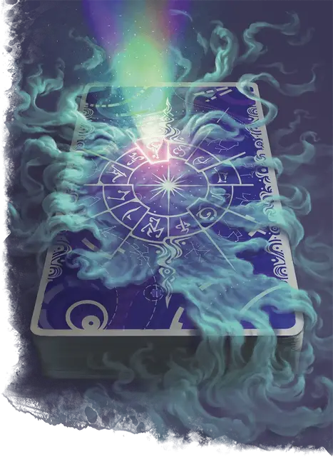

Колода сдающего судьбу
Fate Dealer’s Deck
Чудесный предмет, редкость варьируется (+1 редкий, +2 очень редкий, +3 легендарный, требуется настройка Паладином или Жрецом)

На оборотной стороне этих карт начертаны глифы, представляющие Внутренние планы, Внешние планы или священные символы различных божеств. Держа в руках эту колоду, вы можете использовать её в качестве заклинательной фокусировки, и вы получаете бонус к броскам атаки заклинаниями и Сл спасбросков ваших заклинаний. Бонус определяется редкостью колоды.
Кроме того, пока вы держите колоду в руках, вы можете действием вытянуть карту, чтобы израсходовать и бросить одну из ваших Костей Хитов и добавить бонус колоды к выпавшему значению. Одно существо, которое вы видите в пределах 30 футов, либо получает урон излучением, либо восстанавливает хиты (по вашему выбору), равные общему результату.